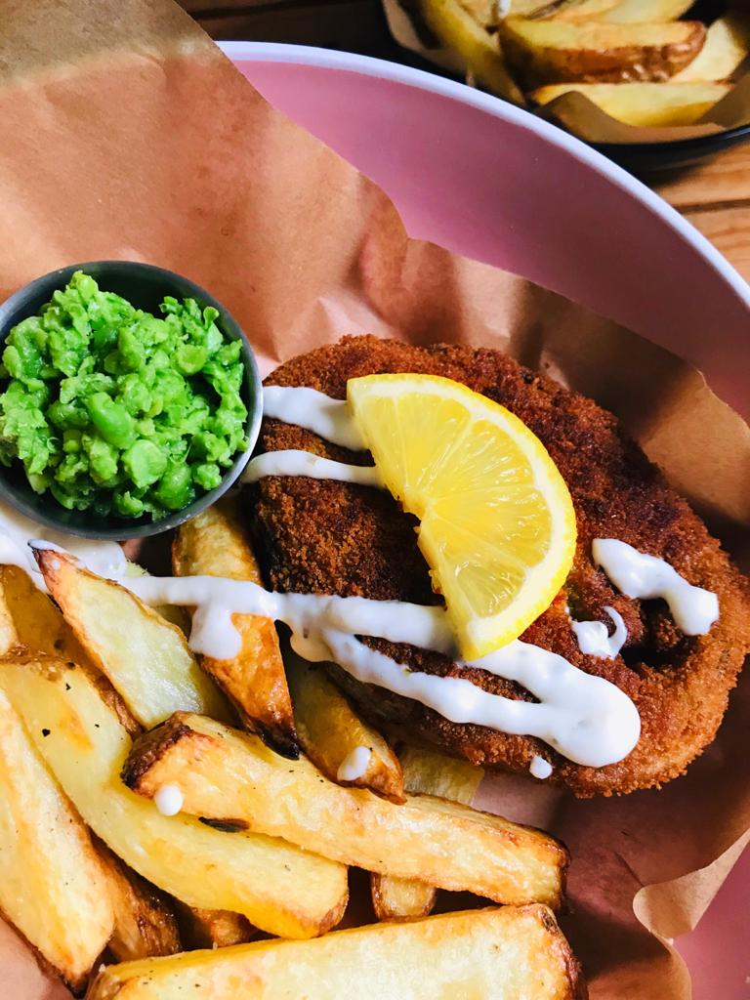
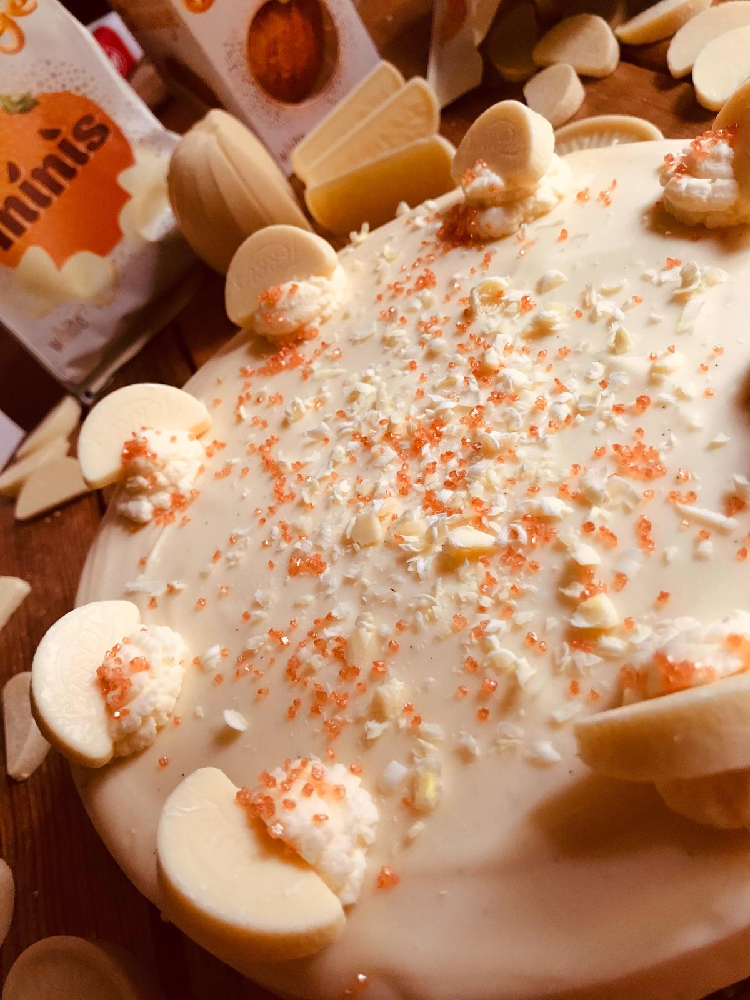

Spidey - This month's feature
This is by far one of my most treasured photos. Taken just after a rainfall, sunset glistening on the web, absolute beauty

This is by far one of my most treasured photos. Taken just after a rainfall, sunset glistening on the web, absolute beauty
I always get the best photos post rain and at sunset. Beauty among the darkness.

My take on winter blues, a warm pink kashmiri chai.

Taking a classic up a notch. Fish, chips, mushy Peas & tartar sauce. I however prefer lime peppersauce. Also, king fish over all options
Need I say more? Smooth rish chocolatey. I dont like white choc or cheesecake, but this might be the only exception....
